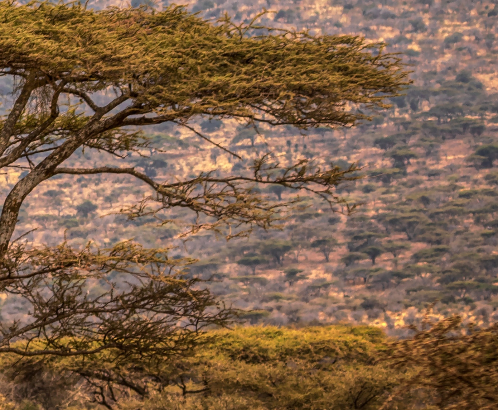
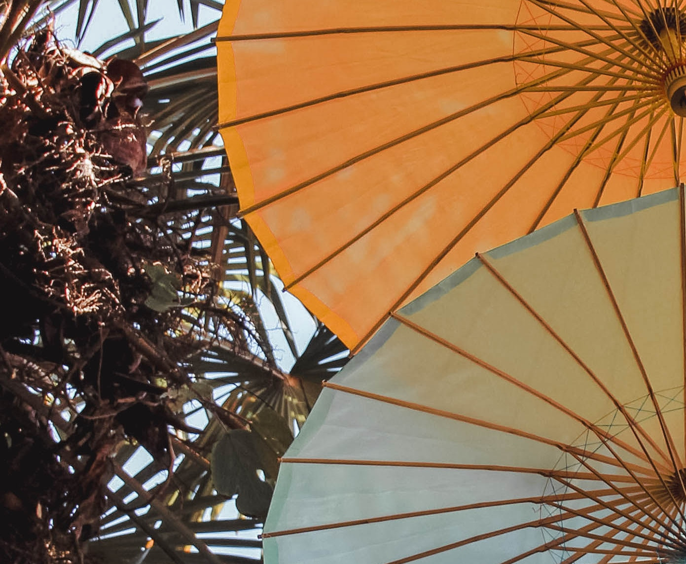

Původ kávy
Káva pochází z tropických oblastí po celém světě. Největšími producenty kávy jsou země jako Brazílie, Kolumbie, Etiopie a Vietnam. Každá z těchto zemí má své vlastní unikátní podmínky pro pěstování a zpracování kávy, což ovlivňuje chuť a charakter jednotlivých odrud.
Výběr kávy z konkrétní pěstitelské oblasti může být skvělým způsobem, jak objevovat rozdíly v chuti a aromatu mezi jednotlivými regiony. Můžete si vychutnat plnou a sladkou chuť jihoamerických káv, nebo se ponořit do exotických tónů afrických káv s ovocnými a květinovými aroma.
Jížní Amerika
Brazílie je největším producentem kávy na světě a vydává mnoho druhů arabiky. Kolumbie je známá svou kvalitní arabikou s vyváženou chutí. Dalšími významnými producenty jsou Peru, Ekvádor a Bolívie.
Střední Amerika
Káva z regionu Střední Ameriky je obecně vyhlášená pro svou jemnost a jemné kyselosti. Costa Rica, Guatemala, Honduras a Salvador jsou známé producenty kávy ve Střední Americe.
Afrika
Etiopie je považována za kolébku kávy a má dlouhou historii v pěstování kávovníku arabického. Káva z Keni je také ceněna pro svou vysokou kvalitu a výrazné ovocné tóny. Dalšími významnými africkými producenty jsou Tanzanie, Rwanda a Uganda.
Asie
Káva z Asie se vyznačuje svými jedinečnými charakteristikami. Indonésie je největším producentem kávy v Asii a známá je zejména arabika z ostrova Sumatra. Vietnam je druhým největším producentem kávy na světě a specializuje se na robustu.